Module 2.
H-Chat 더 깊이 쓰기
이 시간에 할 일
M2
M1이 한 번 묻고 답 받는 법이었다면,
M2는 같은 일을 계속 맡기는 법입니다.
| 구분 | 내용 |
|---|---|
| 개념 | 프로젝트 — 반복업무 전용 작업공간 |
| 실습 | 나만의 반복업무 프로젝트 만들기 · 일반 챗과 결과 비교 |
| 개념+시연 | 커넥터 — 업무자료와 연결하는 통로 |
| 개념+실습 | H-Chat 데스크탑 설치 · Pro와 무엇이 다른가 |
| 실습 | 내 PC 폴더의 업무파일 한 번에 정리 |
매번 처음부터 다시 설명하고 있지 않나요
M2-1 · 개념새 대화를 열 때마다 같은 말을 다시 입력하고 있습니다.
- “우리 팀 보고서는 표부터 넣어줘”
- “존댓말 말고 개조식으로 써줘”
- “이 양식 그대로 지켜줘”
- “지난번에 준 자료 다시 올릴게…” 같은 파일을 매번 다시 업로드
프로젝트 만들기 — 두 번 클릭이면 끝
M2-1 · 개념왼쪽 메뉴 프로젝트로 들어가 오른쪽 위 [+ 새 프로젝트]를 누르면 됩니다.
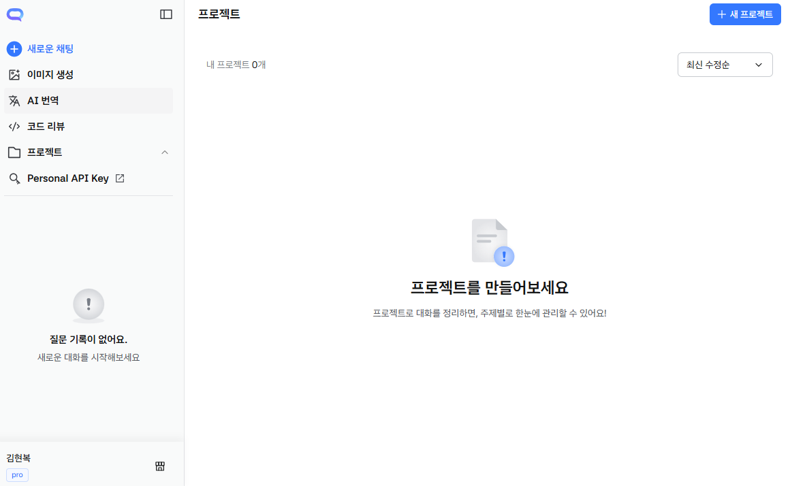
1① 프로젝트 > 오른쪽 위 [+ 새 프로젝트]
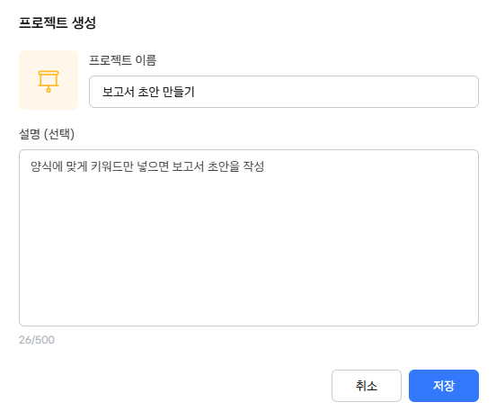
② 이름과 설명을 적고 [저장]
우리 팀 양식을 리소스로 넣어두기
M2-1 · 개념양식을 한 번만 올려두면, 이 방의 모든 대화가 그 양식을 참고합니다.
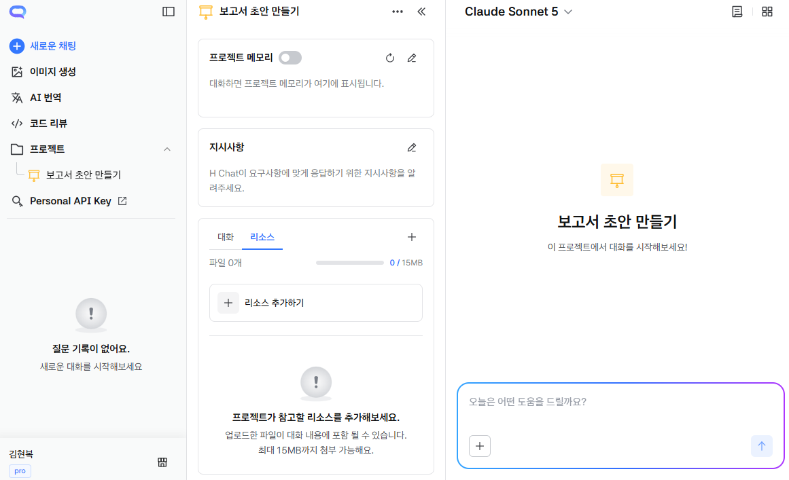
1① 리소스 탭 > [＋ 리소스 추가하기]
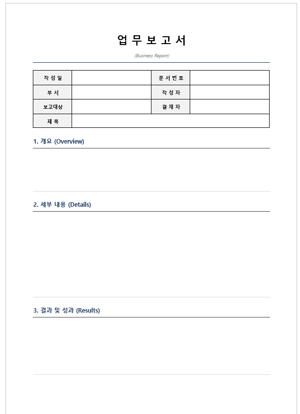
② 우리 팀 업무보고서 양식 선택
③ 파일 1개 등록 · AI 요약까지 자동
왜 결과가 매번 다를까요
M2-1 · 개념요청이 짧을수록 AI는 빠진 부분을 스스로 추측합니다.
한 마디로 맡기면
- 분량 · 형식 · 톤을 AI가 추측한다
- 추측은 매번 달라진다
- 그래서 서너 번 다시 요청하게 된다
칸을 채워 맡기면
- 추측할 자리가 줄어든다
- 같은 요청이면 비슷한 결과가 나온다
- 고칠 곳만 짚으면 끝난다
프롬프트 대회 우승 방식 — CO-STAR
M2-1 · 개념싱가포르 프롬프트 대회 우승자가 쓴 틀입니다. 여섯 글자만 기억하면 됩니다.
빠진 칸을 채워 넣는 것만으로 AI가 추측할 자리가 줄어듭니다.
C — 맥락
어떤 상황인가 · 무슨 자료를 두고 하는 말인가
O — 목표
무엇을 해달라는 것인가
S — 스타일
개조식인가 줄글인가 · 어떤 방식으로 쓸까
T — 톤
정중하게 · 간결하게 · 친근하게
A — 대상
누가 읽는가 — 팀장 · 임원 · 협력사
R — 응답형식
표인가 문단인가 · 분량은 얼마나
매번 같은 칸
맥락 · 스타일 · 톤 · 대상 · 응답형식
그때만 바뀌는 칸
목표 — 이번에 시킬 일
지시사항 — 이 방이 알아야 할 규칙
M2-1 · 개념리소스가 ‘자료’라면, 지시사항은 ‘규칙’입니다.
CO-STAR에서 ‘매번 같은 칸’을 옮겨 적습니다
- 여기에 적는 칸 — 맥락 · 스타일 · 톤 · 대상 · 응답형식
- 요청할 때 적는 칸 — 목표
빈칸만 채우면 되는 문장
맥락 — 우리 팀은 OOO 일을 한다.
스타일 — OOO 방식으로 써줘.
톤 — OOO 말투로.
대상 — 이 글은 OOO가 읽는다.
응답형식 — 결과는 OOO 형식으로 줘.
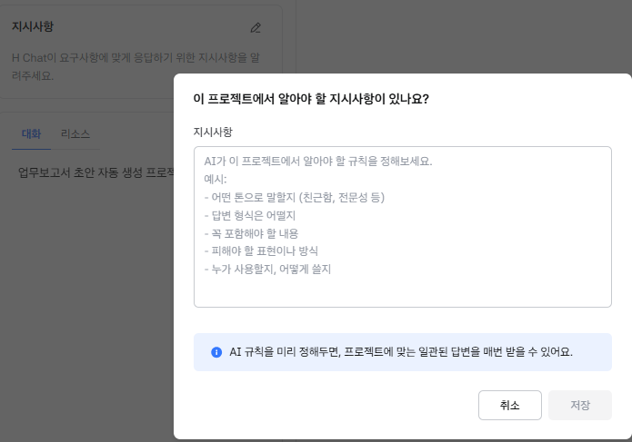
지시사항 입력창 — 적을 항목을 화면이 알려줍니다
이 방의 규칙을 지시사항에 적어둡니다
M2-1 · 개념한 번만 적어두면, 다음부터 이 방에서는 매번 그대로 나옵니다.
프로젝트 지시사항에 적는 문장 — CO-STAR를 그대로 채운 예
맥락 — 우리 팀은 인사팀. 작성자는 김현복. 올려둔 업무보고서 양식을 쓴다.
목표 — 내가 키워드만 주면 그 양식대로 보고서 초안을 만든다.
스타일 — 개조식으로, 항목마다 세 줄을 넘기지 마.
톤 — 사내 보고용으로 담백하게.
대상 — 보고대상·결재자는 부장님 · 팀장님 · 이사님 중에서 고르게 해줘.
응답형식 — 양식 그대로 채우고 작성일은 오늘 날짜. 빈칸이 남으면 알려줘.
고정할 것
부서 · 작성자처럼 매번 같은 값
다시 입력할 필요가 없어진다
자동으로 채울 것
작성일처럼 그날그날 달라지는 값
‘오늘 날짜로’ 라고만 적어둔다
고르게 할 것
보고대상 · 결재자처럼 때마다 바뀌는 값
선택지를 미리 정해둔다
이제 키워드만 넣으면 됩니다
M2-1 · 개념이 방에 넣은 요청 — 남은 칸은 ‘목표’ 한 줄뿐입니다
사내 축구대회 리그 일정협의 포상
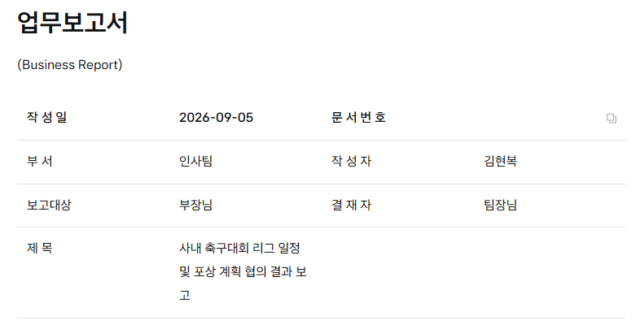
① 작성일 · 부서 · 작성자 · 보고대상 · 결재자가 규칙대로 채워짐
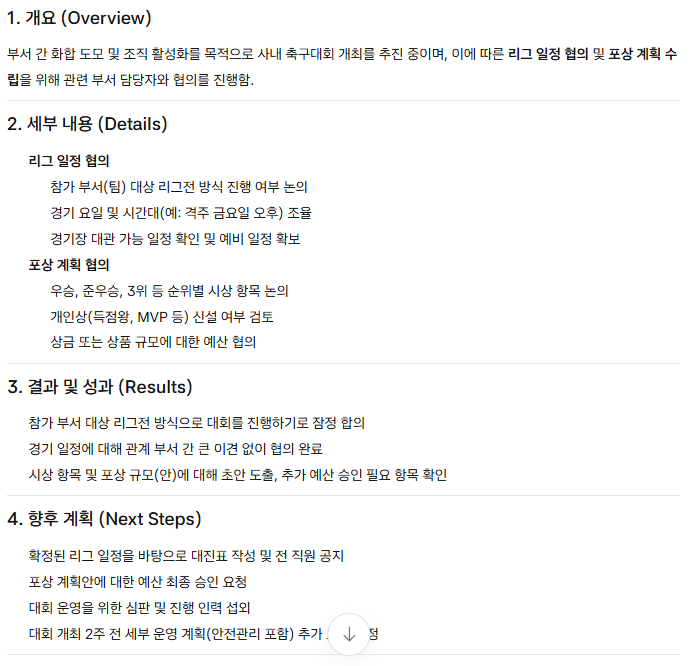
② 개요 · 세부 내용 · 결과 · 향후 계획까지 양식 그대로
[실습] 내 업무로 프로젝트 만들기
M2-2 · 실습- 내가 매주 반복하는 업무 1개 고르기 보고서 · 회의록 · 번역 · 고객 응대 · 자료 정리 중
- 프로젝트 > 새 프로젝트 만들기 이름 · 설명 한 줄
- 참고자료(리소스) 등록 — 우리 팀 양식 올리기 Word · Excel · PowerPoint · PDF 등 쓰던 서식 그대로 올릴 수 있습니다
- 지시사항 적기 — 빈칸 문장에 내 규칙 채우기
- 프로젝트 채팅에서 실제 요청 1개 실행 → 결과 확인
왜 하는가
기준을 한 번만 적어두고 매번 같은 품질의 결과를 받기 위해서입니다.
준비물
우리 팀 양식 1~2개 (Word · Excel · PPT)
지시사항 빈칸 문장 · 실제 요청 1개
이런 방도 만들 수 있어요
회의록 방 — 녹취 → 팀 양식 회의록
메일 방 — 상황 → 사내 톤 메일 초안
번역 방 — 팀 용어집대로 통일 번역
정리 방 — 엑셀 서식대로 표 정리
지금 AI와의 대화, 이런 문제가 있습니다
M2-3 · 개념회사 안의 일을 물어보면 AI가 알까요?
“우리 회사 경조사 휴가는 며칠이야?”
“회사마다 다릅니다…” — 일반적인 이야기만 돌아옵니다.
우리 사규 문서를 본 적이 없다
“H-Chat Pro에는 어떤 기능이 있어?”
엉뚱한 설명이거나 모른다고 답합니다.
사내에서만 쓰는 시스템이라 배운 적이 없다
연결해두면 — 사내 자료를 스스로 찾아 씁니다
M2-3 · 시연연결해두면 Jira · Confluence 자료를 직접 검색합니다.
연결 방법 — 사용 영상 보기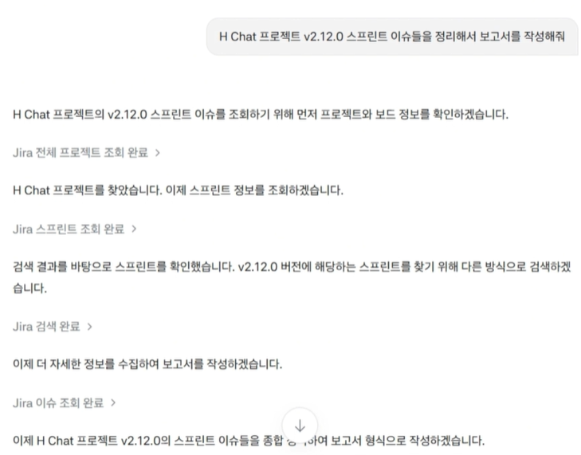
내가 한 것
“v2.12.0 스프린트 이슈 정리해서 보고서 작성해줘” 한 줄
AI가 스스로 한 일
Jira 조회 → 스프린트 조회 → 이슈 검색 → 보고서 작성
Confluence도 같은 방식
“○○ 페이지 찾아서 3줄로 요약해줘”
문서를 찾아 요약까지 해 준다
H Chat 데스크탑 실습 세팅하기
M2-4 · 안내데스크탑 실습에 쓸 개인 API 키를 먼저 만들어 둡니다.
H-Chat Pro 왼쪽 메뉴 Personal API Key → OTP 인증 → 키 생성
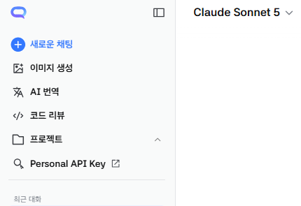
1① 왼쪽 메뉴 > Personal API Key
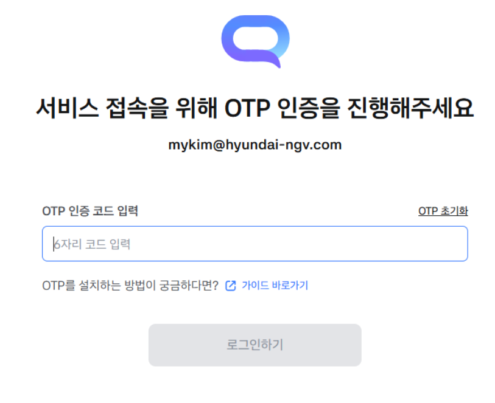
② OTP 인증 후 키 생성
같은 요청인데, 왜 결과가 다를까요?
M2-5 · 개념같은 문장을 같은 모델(Sonnet 5)로 두 곳에서 실행했습니다 — “오늘 뉴스 정리해서 pdf로 뽑아줘”
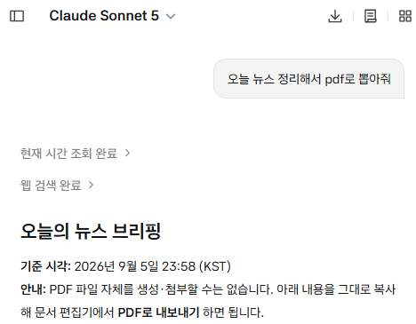
① H-Chat Pro — “PDF 파일 자체를 만들 수는 없습니다”
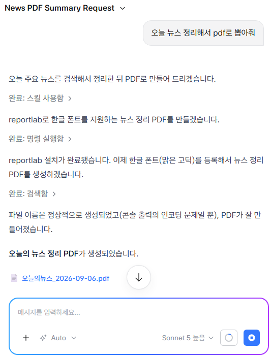
② H-Chat 데스크탑 — PDF 파일이 만들어짐
Agent는 세 가지로 이루어집니다
M2-5 · 개념Agent란? 스스로 보고 · 정하고 · 해내는 일꾼입니다.
사람으로 치면 눈으로 보고, 머리로 정하고, 손으로 해냅니다. Pro와 데스크탑의 차이도 여기서 갈립니다.
환경인식
무엇을 보는가
대화창에 올린 파일 · 내 PC의 폴더
판단
무엇을 할지 정한다
모델의 영역 — M1에서 고른 그 엔진
행동
무엇을 할 수 있는가
가진 도구로 한다 — 글쓰기 · 그림 생성 · PDF 만들기
데스크탑은 할 수 있는 일이 더 많습니다
M2-5 · 개념
모델은 같습니다. 다른 것은 무엇을 볼 수 있고, 무엇을 할 수 있는가입니다.
Agent의 세 가지 중 눈과 손이 넓어진 것입니다.
H-Chat Pro — 브라우저
보는 것 — 대화창에 올린 파일만
하는 것 — 읽고 · 답하고 · 화면에 써 준다
답을 받아 내가 옮겨 적습니다.
H-Chat 데스크탑
보는 것 — 내 PC의 폴더와 파일까지
하는 것 — 파일을 열고 · 만들고 · 고치고 · 저장한다
결과물이 내 폴더에 남습니다.
Effort — 얼마나 깊이 생각할지
M2-5 · 개념모델이 누가 일할지라면, Effort는 얼마나 공들일지입니다.
같은 사람에게 “쓱 훑어봐” 하는 것과 “꼼꼼히 들여다봐” 하는 것의 차이입니다.
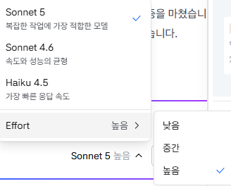
모델 이름 옆 Effort > 낮음 · 중간 · 높음
낮음
빠르게 훑고 바로 답합니다 — 단순 정리 · 형식 맞추기
중간
보통 업무에 무난합니다 — 기본값으로 두면 되는 자리
높음
오래 생각하고 꼼꼼히 답합니다 — 복잡한 판단 · 긴 문서 분석
[실습] 내 PC 폴더의 업무파일 한 번에 정리
M2-6 · 실습- 정리하고 싶은 내 폴더 하나 고르기 다운로드 · 내 문서처럼 파일이 쌓여 있는 곳
- 마땅한 폴더가 없으면 배포된 실습 폴더 사용
- 데스크탑에서 그 폴더를 지정하기
① 먼저 — 표로 정리하기
이 폴더의 파일들을 표로 정리해줘. 파일명 · 주제 · 중요도 · 날짜 순서로.
② 이어서 — 날짜별 폴더로 정리하기
날짜별로 폴더를 만들어서 파일들을 각 폴더로 옮겨줘.
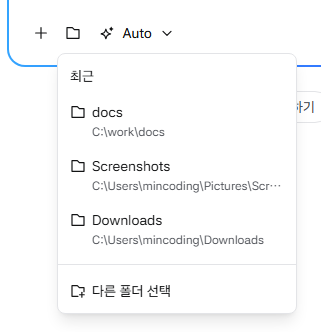
입력창 폴더 아이콘 > 최근 폴더 또는 [다른 폴더 선택]
왜 하는가
앞에서 배운 ‘환경인식 = 내 PC 폴더’를 눈으로 확인합니다.
무엇이 남는가
열어보지 않고도 만든 내 폴더 요약표
날짜별로 정리된 폴더 — 내가 손대지 않고
스킬 — 필요할 때 불러 쓰는 레시피
M2-6 · 개념스킬은 ‘이 일은 이렇게 하는 것’을 적어둔 레시피 한 장입니다.
요리책처럼 필요할 때만 꺼내 씁니다. 매번 설명하지 않아도 그 방법대로 해 줍니다.
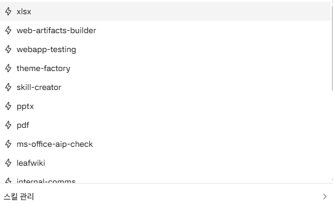
① 입력창에 / 를 치면 쓸 수 있는 스킬이 뜬다
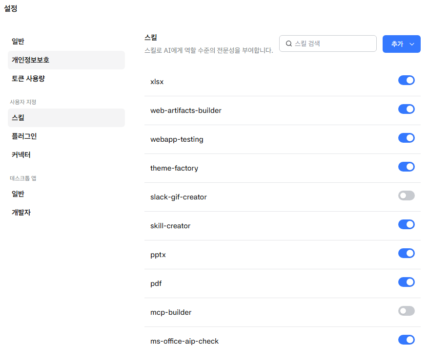
스킬 화면 — 스킬을 켜고 끌 수 있다">② 설정 > 스킬에서 켜고 끌 수 있다
[실습] 발표자료 초안 만들기
M2-6 · 실습- 탐색기에서 C:\work\docs 폴더를 직접 만들기
- 데스크탑에서 작업 폴더를 C:\work\docs 로 지정
- 아래 문장을 붙여넣고 실행 스킬 pptx 가 대신 만들어 줍니다
- 폴더에 파일이 생겼는지 확인 → 열어보기
그대로 붙여넣는 문장
‘팀 업무 개선 제안’ 발표자료 초안을 pptx 파일로 저장해줘.
표지 · 현황 · 문제점 · 개선안 · 기대효과 5장으로, 각 장은 3줄 이내로.
왜 하는가
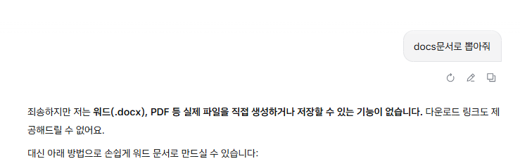
Pro는 “파일을 직접 만들 수 없다”고 답합니다.
데스크탑은 스킬을 써서 더 다양한 일을 할 수 있다는 것을 확인하는 실습입니다.
이어서 고쳐보기
“3장에 표를 넣어줘” · “문장을 개조식으로 바꿔줘”
CLAUDE.md — 폴더에 붙여두는 안내문
M2-6 · 개념작업 폴더에 안내문 한 장을 넣어두는 것입니다.
새로 온 사람에게 건네는 “우리는 이렇게 합니다” 메모와 같습니다.
데스크탑 — CLAUDE.md
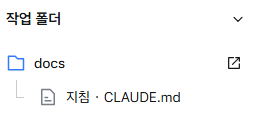
폴더 안에 넣어두는 파일 한 장
그 폴더에서 일할 때 항상 따른다
Pro — 프로젝트 지시사항
그 방에서 지킬 규칙
앞에서 빈칸 채워 적었던 그것
H-Chat이 좋은 점
M2-6 · 개념판단(모델)과 도구를 내가 골라 조합할 수 있는 환경입니다.
바깥의 AI 서비스는 대개 자기 회사 모델 + 자기 도구로 묶여 있습니다.
모델을 골라 쓴다
한 곳에서 OpenAI · Claude · Gemini
업무 성격에 맞춰 엔진만 바꿔 끼운다
도구까지 함께 쓴다
같은 화면에서 파일 만들기 · 스킬 · 이미지 생성
모델과 도구를 따로 고를 수 있다
사내 자료에 붙는다
커넥터로 Confluence · Jira 연결
권한 안에서, 최신 자료 기준으로
M2 정리
M2 · 정리오늘 늘어난 것은 ‘AI가 보는 것’과 ‘할 수 있는 일’입니다.
감사합니다.
이어서 M3. Claude Code로 익히는 바이브코딩